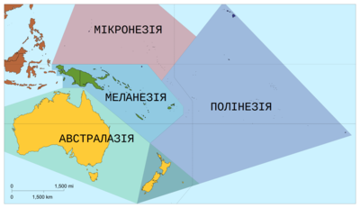

Полінезія (грец. πολύ, poly — багато, грец. νῆσοι, nēsoi — острови) —
група островів Океанії,
розташованих в центральній частині Тихого океану,
між 23°30'пн.ш. — 28°пд.ш. і 176°с.д. —
109°20'з.д.
Зміст
Склад
Полінезія включає в свій склад:
- Острови Тонга — незалежна держава з 1970 року
- Гавайські острови — штат США
- Острови Волліс і Футуна — заморська спільнота Франції
- Кірибаті
(частина) — незалежна держава з 1979 року:
- острови Фенікс — Кірибаті, США,
- Острови Лайн — Кірибаті і США.
- Нова
Зеландія — незалежна держава з 1907 року, також відноситься до
Полінезії;
- Токелау — залежна територія Нової Зеландії;
- Острови Кука — державне утворення, вільно асоційоване з Новою Зеландією.
- Ніуе — державне утворення, вільно асоційоване з Новою Зеландією.
- Острів Пасхи — володіння Чилі;
- Самоа — незалежна держава з 1962 року;
- Американське Самоа — володіння США;
- Французька
Полінезія — заморська спільнота Франції:
- Тубуаї
- Маркізькі острови
- Острови Товариства
- Архіпелаг Туамоту
- Архіпелаг Гамб'є
- Острови Піткерн — британські володіння.
Загальний опис
Острови головним чином вулканічного або коралового походження. Вулканічні острови гористі (висота понад 4000 м; на Гавайських островах 4202 м), коралові — плоскі, низовинні. На островах Гавайських і Самоа — діючі вулкани. Більшість островів оточена кораловими рифами.
Клімат субекваторіальний, тропічний, субтропічний (південь), помірний (південь Нової Зеландії), та мусонний. Середньорічні температури від 22 до 26 °C, з незначними амплітудами коливань по місяцях. Річна кількість опадів в середньому 1500—3500 мм. Острови Таїті, Самоа і Тонга схильні до дії сильних ураганів.
Гористі острови покриті густими вічнозеленими субекваторіальними і тропічними лісами особливо на навітряних схилах; підвітряні схили покриті переважно саваною. На узбережжі — кокосова пальма, хлібне дерево, пандануси. У фауні відсутні крупні ссавці, багато птахів.
Головна культура — кокосова пальма. Вирощуються також банани, цукрова тростина, ананаси, кава, какао, каучуконоси, рис, ямі, таро, маніок та ін. Добуток перлів, вилов морських черепах.
Острови Полінезії знаходяться на шляхах, що пов'язують Америку з Південно-східною Азією і Австралією.
Найбільші міста і порти Полінезії: Гонолулу (Гавайські острови), Папеете (Таїті), Апіа (Західне Самоа), Паго-паго (Східне Самоа).
Площа (без Нової Зеландії) близько 26 тис. км². Населення близько 1,2 млн чол. (дані на 1969 рік).
Історія
Острови Полінезії стали відомі європейцям з кінця 16 століття, коли іспанський мореплавець Альваро де Менданья де Нейра вперше в 1568 відкрив Острови Соломона, а потім в 1595 відкрив острови Санта-крус і Маркізькі. У відкритті островів Полінезії аж до 19 століття брали участь португальські, голландські, французькі, англійські і російські мореплавці (див. також Океанія).
Населення
Населення Полінезії складається з 2 основних груп: полінезійців і іммігрантів та їх нащадків з Європи, Америки і Азії.
Перші, що представлені різними полінезійськими народами, різко переважають на островах Тонга, Самоа, Уолліс, Хорн, Елліс, Токелау, Лайн, Кука (разом з островом Ніуе), Суспільства, Тубуаї, Туамоту, Гамб'є, Маркізьких, острови Пасхи.
У Новій Зеландії більшість населення складають англо-новозеландці (нащадки вихідців з Великої Британії та Ірландії),
на Гаваях — американці США і японці; живуть також філіппінці, китайці і ін.
Група китайців є і на острові Таїті.
На деяких островах Лайн живуть мікронезійці — вихідці з островів Гілберта.
Полінезійці
Полінезійці — група споріднених народів, корінне населення Полінезії і деяких невеликих островів східної Меланезії. До них належать тонганці (острови Тонга), самоанці (острови Самоа), увеанці (острови Волліс), футунці (острови Футуна), еллісці (острови Елліс), токелауанці (острови Токелау), ніуеанці (острів Ніуе), пукапуканці, раротонганці, мангайці, тонгареванці, маніхики-ракаханганці і ін. (острови Кука, Таїті, острови Товариства), убуайці (острови Тубуаї), туамотуанці, напуканці, реао-пукаруханці (острови Туамоту), мангареванці (острови Гамбье), хіванці (Маркізькі острови), рапануйці (острів Пасхи), гавайці (Гавайські острови), маорі (Нова Зеландія). Загальна чисельність — близько 750 тис. ос. (1970, оцінка).
Мови Полінезії входять в малайсько-полінезійську родину мов. Пануюча релігія — християнство — поєднується у Полінезії із стародавніми місцевими віруваннями.
Антропологічний тип Полінезії склався в результаті змішування стародавніх південних монголоїдів і негро-австралоїдів.Тур Геєрдал відстоював теорію американського походження Полінезії, але більшість дослідників вважають, що їх предками були групи мореплавців, які з Південно-східної Азії проникли через Меланезію і Мікронезію на західні рубежі Полінезії. Тут в умовах порівняльної ізоляції завершилося формування антропологічного типу і основних особливостей загальнополінезійської культури.
Незважаючи на обмеженість природних ресурсів островів, зокрема відсутність металів, Полінезія зуміла створити відносно високу культуру.
Основними заняттями були тропічне землеробство, місцями із застосуванням добрив і штучного зрошування, і рибальство. Розводили свиней, собак, курей. Займалися різними ремеслами, які вже відокремилися від землеробства. На початок європейської колонізації (кінець 18 ст.) Полінезія знаходилася на різних стадіях розкладання первіснообщинного устрою, а на Гавайських островах, Таїті і Тонга складалися перші держави.
Господарювання колонізаторів призвело до значного зменшення чисельності жителів Полінезії, втрати ними найкращих земель, руйнуванню багатьох сторін їхньої самобутньої культури. На багатьох островах капіталістичні відносини стали визначальними, хоча збереглися пережитки первіснообщинного устрою. Сучасна Полінезія веде напівнатуральне сільське господарство.